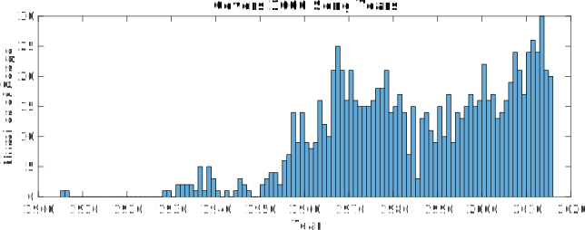

The Dataset
Description
This dataset was curated and checked by hand starting from 395 groups of songs randomly drawn from https://secondhandsongs.com. For each song, there is metadata (song name / artist name / release year), computed beat onset times, MFCCs, and HPCPs, which are all explained below in more detail. Metadata is in text files and the beat onset times / MFCCs / HPCPs are individual .mat files for each song. For each feature type, a set of songs which are all covers of each other are contained in the same folder, and their filename corresponds to their secondhandsongs ID. For instance, in the MFCC files, 384/263799_MFCC.mat is the file containing MFCC features for the song at link https://secondhandsongs.com/performance/263799, which happens to be the original version of LMFAO's "Party Rock Anthem."
NOTE: All audio was resampled to 22050hz mono before these features were computed
If you use this dataset in your work, please cite the following paper:
[1] Christopher J. Tralie. ``Early MFCC And HPCP Fusion for Robust Cover Song Identification.'' In 18th International Society for Music Information Retrieval (ISMIR) 2017, Suzhou China.
These feature have been provided without audio with the hopes that they can be useful in research without compromising any copyright arrangements. Please contact Chris Tralie if you would like to compute another set of features on the dataset, and if you have code for doing so. Any such requested features will also be made available on the web site, with credits to the requester, assuming they also cannot be reverse-engineered by themselves or in conjunction with existing features to recover the original audio.
| File | Description | ||||
|---|---|---|---|---|---|
| Metadata.zip (202.8Kb) |
This contains a text file for each song in the dataset. The first three lines are song name, artist, and date of recording release, respectively. Sometimes there is a fourth optional line. For instance, 368/265434.txt contains the following 4 lines
|
||||
| HPCPs.zip (400.7Mb) |
All HPCP features computed with Essentia. For each song, there is a .mat file with the following fields
|
||||
| CREMA.zip (1.9 GB) |
CREMA-PCP features computed with this code | ||||
| CENS.zip (398.1Mb) |
All CENS features computed with librosa. For each song, there is a .mat file with the following fields
|
||||
| MFCCs.zip (702.8Mb) |
All MFCC features, with window sizes equal to half of the sample rate. For each song, there is a .mat file with the following fields
|
||||
| Beats.zip (3.0Mb) |
Different beat intervals from different beat trackers for all songs. For 60, 120, and 180, the beats are computed with a dynamic programming beat tracker courtesy of librosa. For the tempo level 0, the beats are computed with the Madmom library, which is the state of the art if only one beat level is used. For each song, there is a .mat file with the following fields
|
||||
| Zappa.zip (11.3Mb) |
Contains all of the above files for the 8 covers of Zappa's "The Black Page, " as described in the paper. |
Years
Below is a histogram of years that songs in this dataset were recorded. The earliest song is from 1905, and the most recent songs are from 2016
Other Observations
I took a lot of notes as I was going through curating the dataset, and I commented in places how the algorithm described in the paper works on various examples. Below are the notes:- 8: A good example of where the notes are quite different
- 12: Good example of screamo cross genre
- 21: The songs really diverge after the beginning
- 22: This is a language translation, so mfcc completely fails!
- 28: Good example where SSMs work, chroma fails
- 31: Another language translation
- 32: Difficult; very different stylistically (only fusion works)
- 34: Good example where one repeats a section that another doesn't
- 37: One has an intro that's lacking in the other
- 44: Good example of time warping
- 46: Difficult Example
- 52: Instrumental Only Cover
- 60: Extremely difficult example
- 65: Instrumental Only Cover
- 67: Difficult Example
- 70: Time Warping (so SSM does badly)
- 72: Cross language translation (easy example)
- 74: Extreme cross genre example
- 75: Example where one has very non-distinct vocals and all modalities are needed to match
- 76: Good Cross Genre
- 81: An example where chroma does not do well due to the vast vocal embelishments
- 93: Long Intro In Long Version
- 95: Good Example of Complementary Features, very different tempos
- 98: Notes don't work well at all on this one; SSMs work best
- 103: SSMs work way better than chroma (reverb screws up the pitch)
- 107: Raw MFCCs work better here (probably due to the similar drums in the background)
- 112: Willie Nelson has a longer improv halfway through, Johnny Bush has a long improv at the end
- 114: Difficult example with lots of embellishments
- 115: Extremely difficult example
- 116: Long talking intro in one of them
- 119: Spanish example: vocals not very clear with Carlos Puebla compared to others
- 123: The original version has a longer outro
- 124: Very difficult jazz example
- 127: Difficult example (old vocals not very distinct, needs to rely on pitch)
- 133: Difficult examples (stylistically very different)
- 134: Very different genres (Richard Cheese, 1000 Mona Lisas)
- 147: The Babyface version repeats some sections
- 148: HPCP / SSMs complement each other well (some sections towards the middle are spoken word)
- 155: German male / female
- 156: Jerry Garcia studio (Deal) versus Grateful Dead live
- 172: HPCP / SSMs complement each other well
- 180: An orchestral instrumental only cover, which relies entirely on pitch
- 182: Cross genre (R&B to reggae)
- 183: Notes are different, so relies heavily on MFCC SSMs
- 184: Very different instruments
- 186: Difficult example (many embellishments)
- 192: Notes are different, so need to rely on MFCC SSMs
- 195: Looks like OTI failed here, but SSMs worked well still
- 198: Fusion makes a big improvement here for some reason
- 199: UB40 has an extremely long outro
- 207: Cross gender
- 208: Difficult example, seems to only work with fusion
- 219: Fusing makes a huge difference
- 222: Fusion helps here
- 231: OTI seems to have failed here, but SSMs still worked
- 232: Very strange cover of Fleetwood Mac
- 234: Long intro on one of them
- 238: Very strange guttoral cover by "Debauchery"
- 239: One of the songs has a different name but they're definitely all covers
- 241: The Blasters have a long piano solo in the middle
- 242: One of many cross gender examples
- 245: Different titles but they are indeed covers
- 251: Difficult jazz example
- 259: Different song, difficult example with very stylistically different vocals
- 261: Vocal to jazz example (neat!)
- 268: Fusion has a significant impact here
- 273: John Mayall to Santana works well with fusion
- 256, 276: International songs
- 284: SSMs work better than chroma, fusion has a significant improvement over both
- 295: Difficult example
- 301: Difficult jazz example (both beat tracking and major improv)
- 304: Instrumental only cover by Lawrence Welk (chromas are important here)
- 307: Interesting piano to brass jazz example
- 313: Funny cover of Only Happy when It Rains by Richard Cheese
- 317: OTI must have failed here
- 318: Reggae example where raw MFCC works quite well (better than HPCP actually)
- 320: Raw MFCCs work better here than anything else
- 322: Old foreign example
- 323: Raw MFCCs work well here
- 326: First recording and first release by two different artists, but definitely covers (strange)
- 327: Grateful Dead to Courtney Barnett raw MFCC works the best
- 328: Raw MFCCs work well
- 329: Raw MFCCs work well
- 331: Raw MFCCs work well
- 332: Fusion Helps
- 335: Difficult example, lots of embellishments
- 336: None of the individual features work well, but fusion does
- 337: MFCC works surprisingly well for a jazz song
- 342: Steve Perry, Randy Goodrum SSMs do much more than raw MFCCs
- 343: Raw MFCCs work well here
- 344: Fusion helps here
- 352: SSMs by far the best here
- 354: Highly distorted live version
- 355: Fusion helps a lot here
- 357: Cross Genre
- 366: MFCC by itself does well
- 368: Difficult cross genre (Bon Jovi to screamo Catamenia...words are hardly decipherable)
- 367: SSMs do a lot better than MFCCs
- 369: SSMs do a lot better than MFCCs
- 371: SSMs do the best here
- 374: Japanese song
- 378: Cross genre other language
- 381: MFCC/SSMs work better than chroma
- 382: Great cross genre
- 384: Party Rock covers, Ashley Scared The Sky is difficult cross-genre
- 386: Tom Waits to Linda Thompson fusion really helps
- 388: Good example of cello cover of a hard rock song
- 391: Frank Zappa to others good cross instrument
- 393: International Songs